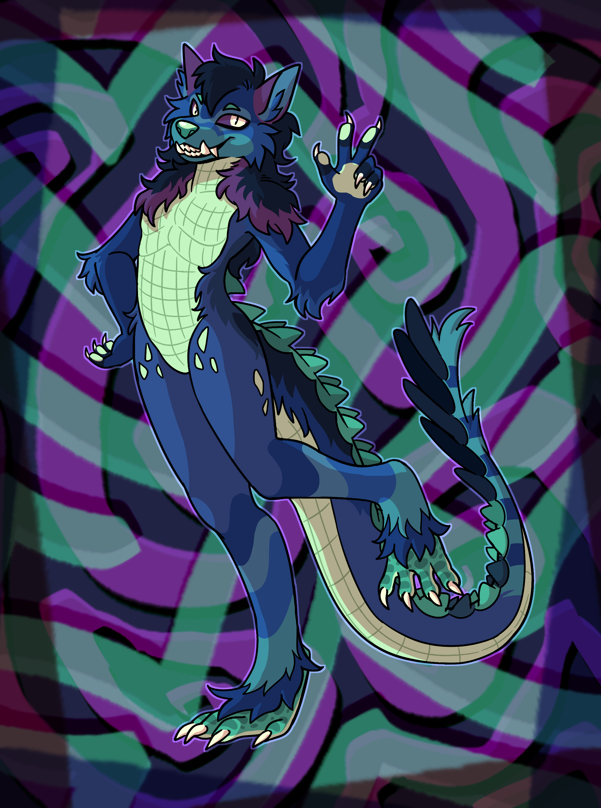
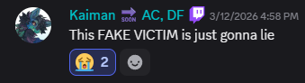
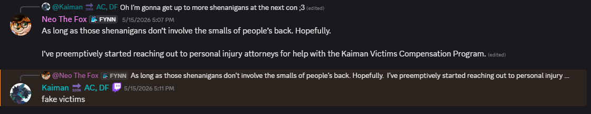
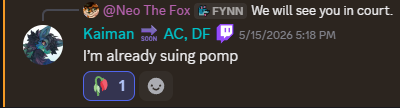

Evidence Locker
Documents and exhibits collected during the investigation into what people are calling The Kaiman Incident. Click any exhibit to read it.
Exhibits A–E
Exhibit A — Incident Report (FC)
Official incident report filed with convention staff describing the first alleged bathroom encounter. Victim identified as BloodDonor.
View DocumentExhibit B — Telegram / Bluesky Screenshots
Archived chat logs where Kaiman discusses the incidents, refers to victims as "fake," and deploys the "Georgia Tech defense."
View DocumentExhibit C — Convention Staff Statements
Sworn statements from convention staff at FC, FWA, MFF, FurSquared, and MegaPlex.
View DocumentExhibit D — Pattern Analysis Report
A breakdown of the timeline, locations, and patterns across FC, FWA, MFF, FurSquared, and MegaPlex.
View DocumentExhibit E — Subject's Public Statements
Collected public statements from Telegram, Bluesky, Twitch, and kaiman.blue.
View DocumentExhibits F–I
Exhibit F — Visual Reference: The Subject
Pictures of the subject's fursona so you know who to watch out for.

Images sourced from kaiman.blue (the subject's own website).
Exhibit G — Georgia Tech Diploma
The subject keeps bringing up their Georgia Tech degree like it means anything here. We're including it for the record.
View DocumentExhibit H — Alleged "Consent Waiver"
A document allegedly circulated by the subject claiming the small of the back is a "handshake zone." Has no legal standing.
View DocumentExhibit I
Exhibit I — Discord Chat Screenshots
Private Discord server chat logs showing discussions about the Kaiman Incident, including victim accounts, witness statements, and the subject's own messages.



Screenshots provided by an anonymous source. Authentication pending.
Key Findings
Pattern Established
All of these happened in convention bathrooms at four different cons (FC, MFF, FurSquared, MegaPlex). Same spot every time.
Consistent Testimony
Every victim describes the same area: the "small of the back." One of them, BloodDonor, is willing to be named publicly.
Lack of Remorse
Instead of apologizing, the subject called everyone "fake victims" and brought up their Georgia Tech degree as if that settles anything.
Subject's Position
The subject maintains that:
- The "small of the back" is not a legally recognized erogenous zone.
- All alleged touches were incidental and occurred in crowded public spaces.
- The complainants are engaged in a coordinated defamation campaign led by BloodDonor.
- No convention staff (FC, FWA, MFF, FurSquared, MegaPlex) issued any formal bans.
- Their Georgia Tech education gives them unique authority on matters of anatomy and consent.
- Their personal website (kaiman.blue) and content creation are being unfairly impacted.
The "Georgia Tech defense" is unprecedented in legal history.